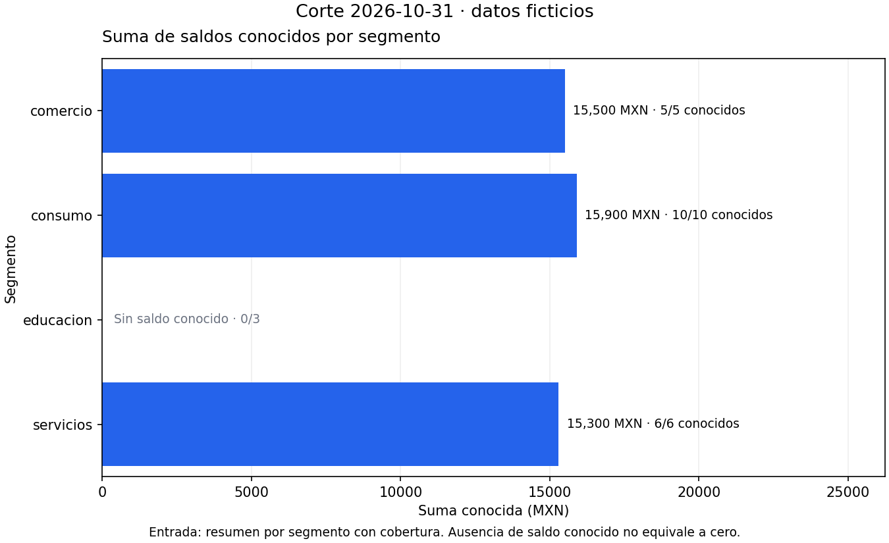
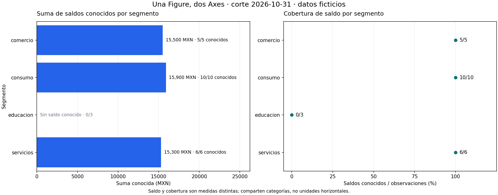

04.02 — Matplotlib: Figure y Axes
MÓDULO 04 / 04.02
Contenido / Visualización en Python
Inicio / Módulo 04 / Lección 04.02
| Tu sesión | Qué prepararás o comprobarás |
|---|---|
| Meta | Construir y guardar una Figure con Axes explícito |
| Necesitas | Entorno con pandas y Matplotlib; resumen incluido |
| Evidencia | Código, figura guardada y comprobación de datos y cierre |
Preparación · Material de apoyo · Ir al lab · Comprobar
Propósito
Construir una figura desde datos comprobados y controlar dónde se dibuja, qué se etiqueta y qué archivo se guarda.
Antes de empezar
Completa 04.01 — Pregunta y elección de gráfico y su lab; recupera funciones de Python y el cierre pandas/SQL.
No necesitas aprender a diseñar clases para utilizar los objetos que entrega Matplotlib.
Usamos pandas y Matplotlib del entorno elegido. Sus referencias declaradas son 2.3.3 y 3.10.7; la verificación local utilizó 2.3.3 y 3.10.6 disponibles, sin modificar entornos ni agregar dependencias. La API se contrastó con la guía oficial de 3.10.7. No confundas «versión de referencia» con «más reciente».
Sesiones sugeridas: A, secciones 1–4; B, secciones 5–7; C, guardado, comprobación y lab. La figura con dos Axes es una extensión; una figura sencilla guardada correctamente basta para el criterio esencial.
Qué vas a aprender
- Distinguir Figure, Axes y Axis por su responsabilidad.
- Crear una Figure con subplots y dibujar mediante el Axes correspondiente.
- Etiquetar unidades y cobertura conservando las ausencias.
- Guardar la Figure correcta, revisar el archivo y cerrar los recursos.
Material de apoyo
| Recurso | Para qué sirve | Uso |
|---|---|---|
| Script de ejemplo | Construir la figura y comprobar sus datos | Para el recorrido |
| Resumen de octubre | Inspeccionar la tabla comprobada antes de dibujar | Entrada incluida |
| Vista de referencia | Contrastar medida, cobertura y ausencia | Para observar |

Las figuras incluidas sirven para observar y contrastar. Abre el script cuando el recorrido lo indique para regenerar o practicar; conserva las fuentes y las entregas anteriores y utiliza los destinos de práctica indicados.
1. Datos antes que objetos gráficos
resumen_octubre.csv conserva una muestra pequeña del resumen conciliado de 03.09, con su fecha añadida como metadato explícito. No se vuelve a limpiar cartera ni se cambian las fuentes anteriores.
| Segmento | Registros | Saldos conocidos | Suma conocida MXN |
|---|---|---|---|
| comercio | 5 | 5 | 15 500 |
| consumo | 10 | 10 | 15 900 |
| educacion | 3 | 0 | Ausente |
| servicios | 6 | 6 | 15 300 |
Contrato: una fecha y una fila por segmento; conteos enteros, registros positivos, conocidos entre cero y registros; suma ausente si no hay saldos conocidos. El archivo tiene cuatro filas porque la figura resume cuatro categorías; las 24 observaciones originales permanecen en las lecciones de SQL.
La pregunta sigue siendo «¿qué suma conocida tiene cada segmento?». La tabla totaliza 24 registros, 21 saldos conocidos y 46 700 MXN conocidos. educacion debe seguir visible como categoría sin saldo conocido; no se le asigna cero.
2. Figure, Axes y Axis: nombres parecidos, responsabilidades distintas
| Objeto | Responsabilidad | Nombre que usaremos |
|---|---|---|
| Figure | Contenedor completo: tamaño, uno o más paneles, título general y archivo | fig |
| Axes | Un área de dibujo con marcas, etiquetas, título y coordenadas | ax |
| Axis | El eje horizontal o vertical del Axes, con marcas y escala | ax.xaxis / ax.yaxis |
| Artist | Objeto gráfico que Matplotlib dibuja | Barra, punto, texto, entre otros |
Axes es el nombre de un tipo de objeto: un solo Axes puede contener los dos ejes x e y. No significa necesariamente «varios gráficos». Una Figure puede tener un Axes o varios. Axis, en singular, se refiere a un eje concreto. No tienes que construir manualmente esos objetos para comenzar.
flowchart TD
F["Figure: contenedor y archivo"] --> A["Axes: área de dibujo"]
A --> X["Axis x: escala horizontal"]
A --> Y["Axis y: categorías o escala vertical"]
A --> M["Artists: barras, puntos y textos"]
F --> T["Título general y nota de la figura"]En palabras: la figura reúne el contenido; cada área controla su propio dibujo; los ejes ubican valores y los objetos gráficos los representan. El esquema explica responsabilidades, no necesitas memorizar todas las clases internas.
3. Crear una Figure con un Axes
import matplotlib.pyplot as plt
fig, ax = plt.subplots(figsize=(9, 5.5), layout="constrained")import trae el módulo pyplot y plt es su alias habitual. subplots crea la Figure y sus áreas de dibujo; sin indicar filas/columnas crea un solo Axes. El resultado contiene dos objetos y los asignamos a fig y ax, como los retornos de funciones que ya conoces. Los nombres son variables, no palabras reservadas. Si solo ensayaste esta creación vacía, ciérrala con plt.close(fig) antes de comenzar el siguiente ejemplo, que crea su propia figura.
figsize indica ancho y alto en pulgadas. layout=‘constrained’ permite ajustar espacios para títulos y etiquetas; no garantiza que cualquier texto largo quepa en cualquier tamaño. Siempre abre la salida para revisarla.
Usamos pyplot para crear y cerrar, y los objetos explícitos para dibujar y guardar. Esto evita depender de cuál figura o área haya quedado «actual» por una celda anterior. La interfaz implícita de pyplot también existe, pero mezclarlas sin control puede enviar un título o una marca al panel equivocado.
4. Dibujar y etiquetar con métodos del Axes
Una introducción breve con los tres segmentos cuyo saldo sí es conocido:
segmentos = ["comercio", "consumo", "servicios"]
saldos = [15500, 15900, 15300]
fig, ax = plt.subplots(figsize=(9, 5.5), layout="constrained")
barras = ax.barh(segmentos, saldos, color="#2563eb")
ax.set_title("Suma conocida · segmentos con saldo observado · octubre 2026")
ax.set_xlabel("Suma conocida (MXN)")
ax.set_ylabel("Segmento")
ax.set_xlim(left=0)Esta introducción no es todavía la figura final: omite educacion deliberadamente para mostrar la llamada básica. El ejemplo completo conserva su categoría, ausencia y cobertura; no presentes este bloque como todo el corte.
ax.barh(...) es un método, una operación del objeto ax. Recibe categorías y magnitudes en el mismo orden. Devuelve un contenedor de barras que guardamos en barras; puede usarse para añadir etiquetas después. No recalcula el resumen. El título y etiquetas también son métodos del mismo Axes.
ax.bar_label(barras, labels=["15 500", "15 900", "15 300"], padding=6)
ax.grid(axis="x", alpha=0.2)
ax.set_axisbelow(True)bar_label añade una etiqueta a cada barra; padding separa texto y extremo en puntos gráficos, no en pesos. grid activa líneas de referencia horizontales o verticales según el eje; alpha controla transparencia. set_axisbelow sitúa la cuadrícula detrás de las marcas. El color no cambia valores ni cobertura. Al terminar este ensayo introductorio, usa plt.close(fig) antes de crear la figura completa; no dejes la figura anterior abierta al reasignar fig.
5. Reconstruir la figura completa sin rellenar ausencias
figure_axes.py separa tres responsabilidades:
- read_summary lee y valida tipos, claves, fecha, conteos y ausencias.
- draw_balance recibe un Axes y dibuja sobre él, sin guardar ni cerrar.
- create_single crea una Figure, llama al dibujo y devuelve fig y ax.
La separación permite reutilizar el dibujo en un panel sin crear otra figura por accidente. Recupera parámetros/retorno de 01.04: ax es un argumento más, y el resultado sigue siendo un objeto que puedes configurar.

El script usa posiciones 0–3 para conservar las cuatro categorías; las tres sumas conocidas producen barras. La fila restante recibe un texto de ausencia. El orden de posiciones y etiquetas coincide porque el resumen se ordena y su índice se reinicia antes de dibujar.
set_yticks recibe posiciones y etiquetas. Los límites verticales descendentes sitúan la primera categoría arriba; también existe ax.invert_yaxis para invertir un eje. La suma cero conocida sería una barra de longitud cero con etiqueta numérica y conteo conocido, distinta del mensaje de suma ausente.
Título del panel frente a título de toda la figura
ax.set_title pertenece al área de dibujo. fig.suptitle añade un título general, útil cuando hay más de un panel. fig.supxlabel se usa aquí para una nota común debajo de la figura, con fuente y alcance; no reemplaza las unidades de cada Axes.
La figura mantiene el contrato de 04.01: importe conocido, cobertura y datos ficticios. No atribuye a educacion saldo cero ni una posición en el ranking monetario.
6. Caso vacío y caso con todo desconocido
Una tabla con encabezados pero sin filas significa que no hay grupos para dibujar. El script coloca un mensaje usando coordenadas relativas al Axes:
ax.text(0.5, 0.5, "Sin observaciones en la tabla de entrada",
ha="center", va="center", transform=ax.transAxes)
ax.set_axis_off()transform=ax.transAxes interpreta 0.5/0.5 como el centro del área, no como saldo de 0.5 MXN y categoría 0.5. ha/va alinean el texto; set_axis_off oculta ejes que no tienen datos para representar. No se inventan barras cero.
Una tabla con filas pero con todos sus saldos desconocidos no está vacía: conserva segmentos y conteos, con mensajes sin saldo conocido. Por eso la condición summary.empty y la condición suma.isna() se tratan por separado.
7. Una Figure con dos Axes — extensión
fig, axes = plt.subplots(1, 2, figsize=(14, 5.5), layout="constrained")
draw_balance(axes[0], resumen)
draw_coverage(axes[1], resumen)
fig.suptitle("Saldo conocido y cobertura · datos ficticios")Ahora subplots crea una fila y dos columnas. axes contiene dos Axes; [0] y [1] seleccionan cada panel. No llames axes.set_title: debes elegir uno de sus objetos. Con una cuadrícula 2×2, el resultado predeterminado es una matriz y se accede con axes[fila, columna]. Con un solo panel se recibe un Axes directamente.

La vista izquierda tiene MXN y la derecha cobertura de saldo en porcentaje. educacion tiene cobertura 0 % porque hay cero conocidos entre tres observaciones; eso no significa que su saldo sea cero. Las categorías y sus posiciones se mantienen alineadas, pero los ejes horizontales no comparten unidad ni escala. La composición se profundiza en 04.06; no necesitas generar esta segunda figura para completar el lab esencial.
8. Guardar, mostrar y cerrar
fig, ax = create_single(resumen)
try:
fig.savefig(ruta_salida, dpi=150)
finally:
plt.close(fig)savefig guarda esa Figure; el Axes no guarda por sí solo un archivo de toda la figura. La extensión .png determina el formato en este ejemplo. dpi indica resolución raster: una figura de 9×5.5 pulgadas guardada a 150 dpi, sin recortar su tamaño, produce 1350×825 píxeles. No añade información al indicador.
plt.close(fig) libera esa figura del registro de pyplot; no borra el archivo guardado. finally asegura el cierre aunque guardar falle. Evitamos close(‘all’) en una función reutilizable porque podría cerrar figuras ajenas de la sesión. Guardar no cierra automáticamente; si generas varias sin cerrar, se acumulan objetos y consumo de memoria. Cerrar antes de continuar evita estado oculto.
plt.show muestra figuras en un entorno interactivo; no crea por sí solo un PNG. En un notebook puedes ver la figura al final de una celda, pero verla no acredita que esté guardada. Guarda antes de show cuando lo uses y controla el cierre. Para revisar cómo ejecutar desde cero, recupera el primer notebook.
El script elige Agg, un backend de archivos, antes de importar pyplot en su recorrido de ejecución. Así no abre ventanas y funciona también sin escritorio. No cambies a Agg a mitad de una sesión con figuras interactivas abiertas. Para este recorrido abre los PNG generados; no esperes una ventana de show.
Extensión: puedes guardar fig.savefig(‘figura.svg’) para salida vectorial. Los formatos, tamaños y destinos se profundizan en 04.06; un PNG legible basta ahora. El layout ayuda, pero verificar texto, unidades y valores sigue siendo tu tarea.
9. Ejecución y salidas
Desde la raíz, con el entorno elegido adecuado. El primer comando verifica la tabla sin crear figuras; el segundo guarda en carpeta nueva.
PowerShell
python curriculum\04_visualization_python\02_figure_axes\figure_axes.py
python curriculum\04_visualization_python\02_figure_axes\figure_axes.py --output curriculum\04_visualization_python\02_figure_axes\output\mi_figura
# Extensión: también crear la Figure con dos Axes:
python curriculum\04_visualization_python\02_figure_axes\figure_axes.py --output curriculum\04_visualization_python\02_figure_axes\output\mis_paneles --two-panelsBash/Zsh
python curriculum/04_visualization_python/02_figure_axes/figure_axes.py
python curriculum/04_visualization_python/02_figure_axes/figure_axes.py --output curriculum/04_visualization_python/02_figure_axes/output/mi_figura
python curriculum/04_visualization_python/02_figure_axes/figure_axes.py --output curriculum/04_visualization_python/02_figure_axes/output/mis_paneles --two-panelsCon uv antepone uv run --locked a cada comando python; conserva tu gestor. No reinstales si el entorno ya es adecuado. –input permite otra tabla con el mismo contrato de cinco columnas; no acepta directamente los ocho campos del resumen de 03.09 sin seleccionar columnas y añadir su fecha.
La entrega incluye resumen_usado.csv y saldo_conocido.png; con –two-panels, también saldo_y_cobertura.png. Las carpetas existentes se conservan: usa otro nombre para otra entrega o ejecuta sin –output para verificar. No se escriben cambios sobre el CSV de entrada ni sobre ninguna base SQLite.
10. Errores habituales
| Situación | Qué revisar |
|---|---|
| Confundes Axes con dos ejes | Axes es el área; Axis es un eje concreto |
| Título aparece en otro panel | Usa el Axes explícito, no el estado actual |
| Un array de Axes no tiene set_title | Selecciona axes[0] o axes[fila, columna] |
| PNG queda vacío o distinto | Guarda fig antes de cerrar y revisa qué objeto creaste |
| Etiquetas se cortan | Revisa tamaño, espacio y salida real |
| Ausencia aparece como cero | No rellenes la suma; comprueba cobertura |
| Se acumulan figuras al repetir | Cierra cada fig creada por tu función |
Práctica
Realiza el lab 04.02 para crear una figura desde el resumen y comprobar el archivo exportado.
Evidencia y criterio de salida
| Conserva | Comprueba | Explica |
|---|---|---|
| Código y figura de tu práctica | Datos, ausencias, etiquetas y archivo correcto | Qué responsabilidad tienen Figure, Axes y Axis |
| Nota de guardado y cierre | La figura se lee completa y no quedan recursos acumulados | Por qué guardar, mostrar y cerrar son operaciones distintas |
Puedes avanzar cuando construyas una Figure con Axes explícito, conserves contrato y ausencias, guardes el archivo correcto y cierres tus figuras.
Quien aprende realiza y explica la práctica; su compañero revisa. Tu compañero elige un elemento de la figura y pide identificar el Axes y el dato que lo producen. Guarda evidencia, ayudas y dudas en una nota personal junto a tu práctica. PROGRESS.md conserva el desarrollo editorial; disponer del material no acredita por sí solo aprendizaje completado.
No hay proyecto ni checkpoint implementado asociado a esta lección.
Referencias
Ejemplos propios sobre el resumen comprobado del proyecto, contrastados con:
- Matplotlib 3.10.7: objetos e interfaz explícita.
- Figure.savefig.
- pyplot.close.
- Barras horizontales en 3.10.7. Las páginas stable pueden mostrar otra versión; la referencia de esta lección permanece en 3.10.7.
Siguiente paso
Después de la práctica y su comprobación, continúa con 04.03 — Comparaciones y evolución.